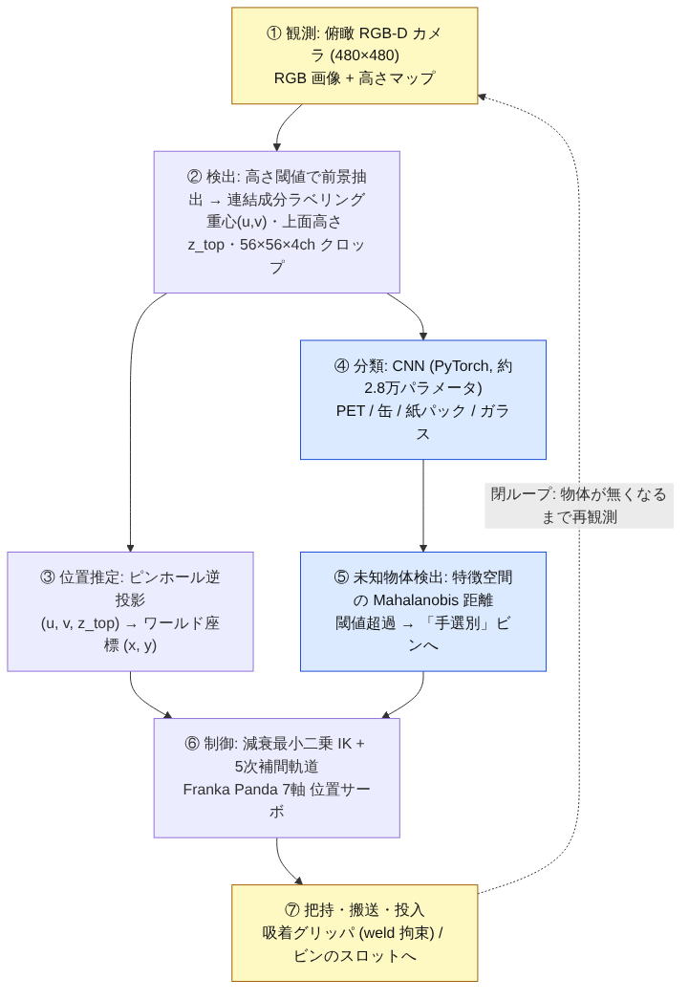
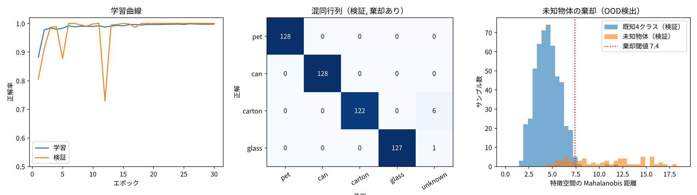
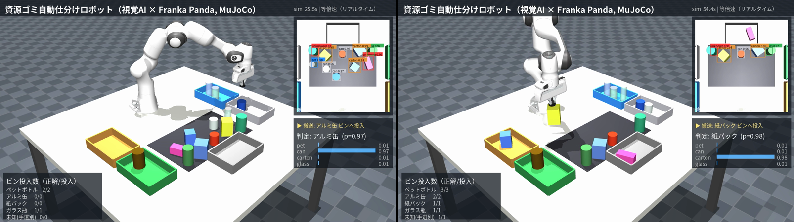

視覚AIによる資源ゴミ自動仕分けロボット
Physical AI 応用1講座 最終課題 説明資料 ／ MuJoCo + Franka Panda + 自作 CNN（RGB-D）による閉ループ仕分けシステム
提出物の対応：動画（YouTube, 等倍速・約1分33秒）／ コード一式（GitHub, public）／ 本説明資料（PDF）。
AI の利用：俯瞰 RGB-D 画像から素材を判定する CNN を自作し、学習（PyTorch）と推論の両方をシミュレータ内の合成データで行った。
1. 課題の概要と目的
資源ゴミ（PET ボトル・アルミ缶・紙パック・ガラス瓶）がベルト上にランダムに置かれた状況を MuJoCo で再現し、
ロボットアーム（Franka Emika Panda）が自分のカメラで物体を見つけ、AIで素材を判定し、素材ごとのビンへ仕分けるタスクを実装した。
素材のラベルや位置は一切ロボットに与えず、観測 → 認識 → 行動 → 再観測の閉ループで全物体を処理する点が本課題のねらいである。
加えて、現実の選別現場で必ず混入する「学習していない物体」に対し、無理に分類せず「手選別」ビンへ退避させる未知物体検出
（Out-of-Distribution 検出）を組み込み、AI の判断を安全側に倒す設計とした。
なぜこのテーマか（実用性の背景）
- 廃棄物選別は AI ロボット化が実際に進む領域である。米 AMP Robotics の AMP Cortex は AI 画像認識でリサイクル品を識別し、
1 分あたり最大 80〜160 ピック（人の約 2 倍）で選別する [1][2]。
- 国内でも、産廃処理業のシタラ興産（埼玉県深谷市）が 2017 年から AI 選別ロボットを本格稼働させ、
選別作業員を 18 名から 2 名に減らし、残った作業員はロボットが取り残した物の確認に専念している [3]。
→ 本課題の「未知物体は手選別へ回す」設計は、この実運用の役割分担をそのまま写したものである。
2. システム構成

図 1 処理パイプライン（青: AI 部分、黄: シミュレータ）
| 要素 | 内容 |
|---|
| シミュレータ | MuJoCo 3.17（Python バインディング）。GPU 不要、OSMesa でヘッドレス描画。timestep 2 ms。 |
| ロボット | Franka Emika Panda 7 軸（MuJoCo Menagerie モデル, BSD-3）。関節位置サーボで制御。手先に吸着グリッパ（weld 等式拘束の ON/OFF で模擬）を追加。 |
| センサ | 作業領域上方 1.05 m の俯瞰カメラ（fovy 42°, 480×480）。RGB と深度を取得し RGB-D センサ（RealSense 相当）として使用。 |
| 対象物体 | 4 素材 × 3 個 + 未知物体 1 個 = 13 個。寸法・色・向き・配置をシードごとにランダム生成（クラス間で色が重なるよう設計し、色だけでは判別できないようにした）。 |
| AI モデル | 4ch 入力（RGB + 高さマップ）56×56 の小型 CNN（Conv×3 + FC, 28,372 パラメータ）。CPU で約 90 秒学習。 |
| 未知物体検出 | CNN の畳み込み特徴（64 次元）に対するクラス条件付き Mahalanobis 距離 [4]。学習データの 97.5 パーセンタイルを閾値とする。 |
| 制御 | 減衰最小二乗法（DLS）による位置+姿勢の数値 IK、最小躍度（5 次）補間、直線補間の搬送軌道。 |
3. 手法の詳細
3.1 知覚：RGB-D からの検出と位置推定
- 深度画像をカメラ高さから引いて「高さマップ」を作り、ベルト面より 1.2 cm 以上高い画素を前景として連結成分ラベリングで物体に分ける。
- 各物体の上面高さ ztop（高さの 90 パーセンタイル）を求め、上面画素のみで重心を取ることで、側面が見える透視歪みによる位置ずれを抑えた。
- ピンホールモデル
f = (H/2)/tan(fovy/2) で画素→ワールド座標に逆投影（z = ztop 平面）。
検証では真値との平均誤差 0.6 cm、最大 1.3 cm で、吸着パッド（半径 2 cm）の許容内に収まった。
3.2 認識：CNN による素材分類（学習 + 推論）
- データ生成：ランダムシーンを 320 個生成し、検出器が切り出したクロップに真値ラベルを付与（2,874 サンプル）。
学習時と同じ検出器を通すことで、学習データと実行時の入力分布を一致させた。
- 入力：RGB 3ch + 高さ 1ch。高さチャネルにより「背の高い PET／低い缶」など形状情報を色と同時に学習できる。
- 学習：シーン単位で 8:2 に分割（同一シーンの物体が両方に入るリークを防止）、平行移動・反転・明るさの拡張、AdamW + cosine 減衰、30 エポック。
- 未知物体検出：softmax 最大確率は未知物体にも 0.9 以上を出すことが多く（検証での棄却率 12.5%）、
特徴空間の Mahalanobis 距離に切り替えて棄却率 73.4%（既知物体の誤棄却 1.4%）まで改善した。
全結合層の特徴より畳み込み層の特徴の方が良く（52% → 73%）、分類に特化した層ほど未知を見分ける情報が失われるという知見を得た。
3.3 行動：IK と把持・搬送
- IK は手先サイト（吸着パッド先端）の位置誤差と「真下向き」姿勢誤差を 6 次元誤差として DLS で反復解法。関節限界はクリップで処理。
- 把持は上空 15 cm から直線降下 → 吸着 → 直線上昇。搬送は一旦 30 cm まで上げてから水平直線移動し、把持物体の底面が他の物体やビン壁に当たらない高さを保つ。
- 投入は物体高さに応じた解放高さ（底面がビン床から 4 cm）で落下衝撃を抑え、同じビンには 3 つのスロットに順に置いて積み重なりを防ぐ。
- 吸着に失敗した場合はその位置を後回しにして再観測する（閉ループによる自己回復）。
4. 結果
4.1 CNN の学習・評価（検証データ 512 サンプル + 未知 64 サンプル）

図 2 学習曲線（左）、検証混同行列（中）、未知物体検出の距離分布（右）
| 指標 | 値 | 備考 |
|---|
| 既知 4 クラス 正解率（棄却なし） | 100.0 % | 検証 512 サンプル。4 クラス間の取り違えは 0 |
| 既知 4 クラス 正解率（棄却あり） | 98.6 % | 誤棄却 1.4 % は「手選別」へ回る安全側の失敗 |
| 未知物体 棄却率（Mahalanobis） | 73.4 % | softmax 閾値 0.8 のみでは 12.5 % |
| モデルサイズ／学習時間 | 28,372 パラメータ／約 90 秒 | CPU 2 コア |
4.2 仕分けタスクの統合評価（動画とは別の 20 シード × 13 物体 = 260 物体）
| 正解＼予測 | PET | 缶 | 紙 | ガラス | 未知 |
|---|
| PET (60) | 60 | 0 | 0 | 0 | 0 |
| 缶 (60) | 0 | 59 | 0 | 0 | 1 |
| 紙パック (60) | 0 | 0 | 54 | 0 | 6 |
| ガラス (60) | 0 | 0 | 0 | 57 | 3 |
| 未知 (20) | 0 | 5 | 0 | 0 | 15 |
| 指標 | 値 |
|---|
| 把持成功（吸着失敗 0 回） | 260 / 260 |
| 素材判定が正しかった物体 | 245 / 260（94.2 %） |
| うち既知素材の取り違え | 0 / 240 |
| 最終的に正しいビンに入った物体 | 244 / 260（93.8 %） |
| 搬送・投入の物理的失敗 | 1 / 260 |
| 1 シーン（13 個）の所要時間 | 平均 83 秒（6.4 秒/個） |
※ 誤りはすべて「既知→未知（手選別行き）」10 件と「未知→缶」5 件で、既知素材同士の取り違えは発生しなかった。
未知→缶は球体を上から見た円形が缶と似るためで、未知物体検出の限界として 6 章で考察する。
4.3 動画（シード 7, 13 物体）

図 3 動画の抜粋。右上: 俯瞰カメラの検出・分類結果、右中: 対象物体のクラス確率、左下: 投入集計
動画では 13 個すべてを把持し、素材判定 13/13 正解、未知物体 1 個を「手選別」ビンへ正しく退避させた（所要 84 秒, 等倍速）。
5. 工夫した点（評価基準との対応）
| 観点 | 内容 |
|---|
| 創造性 | 「分からない物は分からないと言う AI」を仕分けロボットに組み込み、未知物体を手選別へ回す人とロボットの分業を再現した。
RGB に高さマップを加えた 4ch 入力で、色の似た素材を形状で判別できるようにした。 |
| 技術力 | 知覚（RGB-D セグメンテーション・逆投影）、学習（合成データ生成→CNN 学習→OOD 検出器のフィッティング）、
制御（数値 IK・5 次補間・直線搬送・吸着拘束）をすべて自作し、ROS 等のフレームワーク無しで 1 本のパイプラインに統合した。閉ループで失敗から自己回復する。 |
| 実用性 | 実在する AI 選別ロボット（AMP Cortex、シタラ興産の導入事例）と同じ「AI 判定 → ピック → 残りは人が確認」の構成。
GPU 無し・CPU 2 コアで学習から動画生成まで完結するため、再現コストが低い。 |
| 表現力 | 動画にカメラ視点の検出枠・クラス確率バー・フェーズ・集計をリアルタイムに重畳し、AI が何を見て何を判断しているかを可視化した。 |
6. 考察・反省点・今後の課題
- 未知物体の取りこぼし（25 %）：球体は俯瞰からは缶と同じ円形で、高さも近いため特徴空間で缶クラスに重なる。
多視点カメラや深度の形状記述子（曲率）を特徴に加える、あるいは Outlier Exposure で「その他」の多様な形状を学習時に見せることで改善できる。
- 既知物体の誤棄却（4.2 %）が検証時（1.4 %）より高い。実行時は 13 個が密集し、クロップに隣接物体が写り込むため分布がずれる。
学習データも密集シーンで生成する、クロップを前景マスクで切り抜くなどの対策が考えられる。
- 把持の簡略化：吸着を weld 拘束で模擬しており、吸着面の傾き・重量・真空漏れは扱っていない。
Panda の平行グリッパで実際に挟む把持（接触力学）に置き換えるのが次の段階である。
- Sim-to-Real：合成データは照明・テクスチャが単純で、実画像ではドメインランダマイゼーションが必要。
一方、深度ベースの検出と高さチャネルは照明変化に強く、実機移行時の足がかりになる。
- 開発で詰まった点：(1) 搬送高さが低く把持物体が他の物体をなぎ倒した → 30 cm まで上げて直線搬送に変更。
(2) ビンに 3 個入れると積み重なって溢れた → ビンを拡大しスロット投入に変更。(3) 吸着時の中心ずれで物体がビン壁に乗った → スロット間隔・ビン寸法を再設計。
いずれも物体位置のログを取って「いつ・誰が動かしたか」を特定することで解決した。
7. 再現手順
git clone https://github.com/ngokiya/pai-sorting-robot.git && cd pai-sorting-robot
pip install -r requirements.txt # mujoco, torch(CPU可), numpy, scipy, pillow, imageio[ffmpeg], matplotlib
# Linux でヘッドレス描画する場合: sudo apt install libosmesa6 ; export MUJOCO_GL=osmesa（GPU があれば egl）
python src/gen_dataset.py --scenes 320 # 合成データ生成 (約4分, data/dataset.npz)
python src/train.py --epochs 30 # CNN 学習 + 未知検出器 (約90秒, models/sorter_cnn.pt, outputs/training_summary.png)
python src/run_task.py --seed 7 --n_per_class 3 --n_unknown 1 --out outputs/sorting_demo.mp4 # 動画生成 (約20分)
python src/run_task.py --seed 100 --no_video --n_per_class 3 # 動画なし高速評価 (約10秒)
| ファイル | 役割 |
|---|
src/scene.py | シーン生成（テーブル・ビン・物体のランダム生成・カメラ・画素↔ワールド変換） |
src/perception.py | RGB-D 取得、前景抽出・連結成分、位置推定、クロップ生成 |
src/gen_dataset.py | 合成データ生成 |
src/train.py | CNN 定義・学習・Mahalanobis 未知検出器・評価図 |
src/robot.py | 数値 IK、軌道補間、吸着グリッパ、pick / place |
src/run_task.py | 閉ループ仕分けタスクの実行、動画オーバーレイ、結果 JSON |
assets/panda.xml | MuJoCo Menagerie の Panda に吸着ツール（サイト）を追加したもの |
8. 参考文献・使用ライブラリ
- Recycling Product News, "AMP Robotics' first AI-guided robotics system installed in the UK at Recyco" (2021). 80 ピック/分以上（人の約 2 倍）、タンデムで最大 150 ピック/分。
https://www.recyclingproductnews.com/article/37333/
- The Robot Report, "AMP Robotics launches Cortex dual-robot system for recycling" (2019). 最大 160 個/分。
https://www.therobotreport.com/rbr50-company/amp-robotics-launches-cortex-dual-robot-system-for-recycling/
- ニュースイッチ（日刊工業新聞）, "AIロボで産廃選別、作業員18人→2人に" (2017-11-22). https://newswitch.jp/p/11118
- K. Lee, K. Lee, H. Lee, J. Shin, "A Simple Unified Framework for Detecting Out-of-Distribution Samples and Adversarial Attacks," NeurIPS 2018. https://arxiv.org/abs/1807.03888
- MuJoCo 3.17 (Apache-2.0) https://mujoco.org ／ MuJoCo Menagerie franka_emika_panda (BSD-3-Clause) https://github.com/google-deepmind/mujoco_menagerie
- PyTorch 2.x, NumPy, SciPy, Pillow, imageio-ffmpeg, Matplotlib。本課題のコードは MIT ライセンスで公開。
- 講座サンプル「Pick and Place Task - ROS2 Gazebo Simulation (UR3 + Robotiq)」「Gemini Robotics-ER 1.6 を試す」を参考に、ツールを MuJoCo に、認識を自作 CNN に置き換えて構成した。
本課題の実装・実験・文書作成には生成 AI（Claude）を活用した。